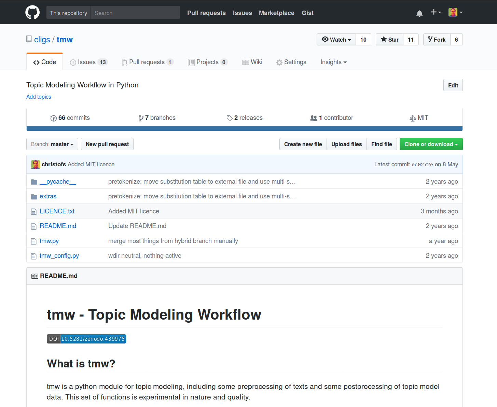
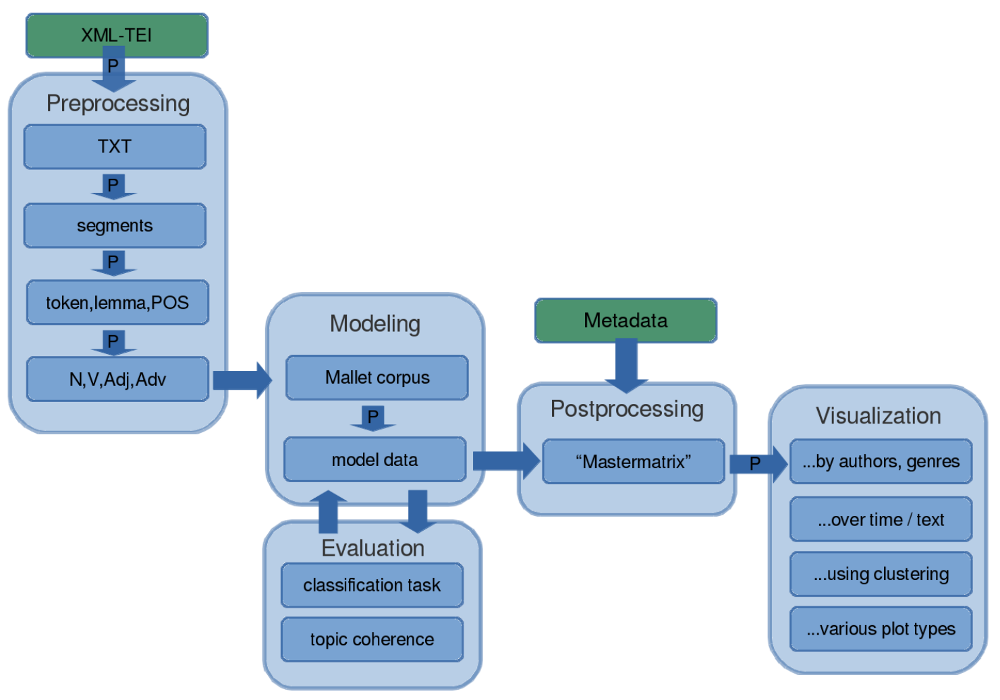
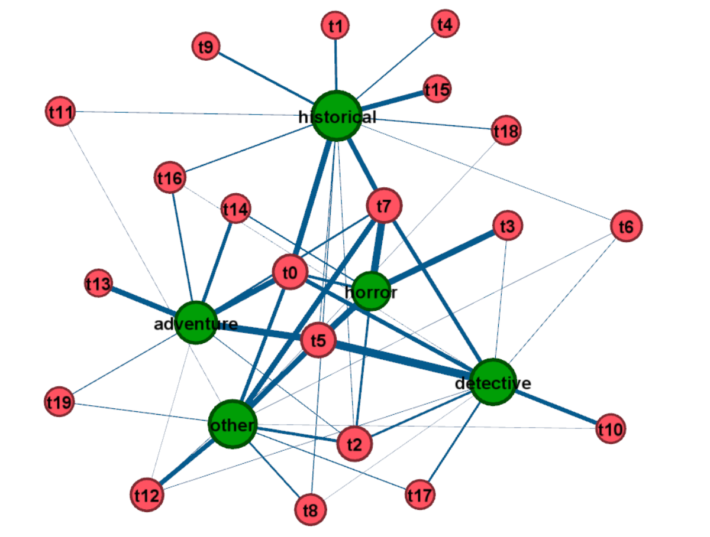

<!doctype html>
<html lang="en">
<head>
<meta charset="utf-8">
<!-- CUSTOMIZE THIS! -->
<title>tmw@dh2017</title>
<meta name="author" content="Christof Schöch">
<!-- END -->
<meta name="description" content="Slides">
<meta name="apple-mobile-web-app-capable" content="yes">
<meta name="apple-mobile-web-app-status-bar-style" content="black-translucent">
<meta name="viewport" content="width=device-width, initial-scale=1.0, maximum-scale=1.0, user-scalable=no, minimal-ui">
<link rel="stylesheet" href="css/reveal.css">
<link rel="stylesheet" href="css/theme/simple.css" id="theme">
<!-- Code syntax highlighting -->
<link rel="stylesheet" href="lib/css/zenburn.css">
<!-- Printing and PDF exports -->
<script>
var link = document.createElement( 'link' );
link.rel = 'stylesheet';
link.type = 'text/css';
link.href = window.location.search.match( /print-pdf/gi ) ? 'css/print/pdf.css' : 'css/print/paper.css';
document.getElementsByTagName( 'head' )[0].appendChild( link );
</script>
<!--[if lt IE 9]>
<script src="lib/js/html5shiv.js"></script>
<![endif]-->
</head>

<body>
<div class="reveal">
<div class="slides">
<section data-markdown="" data-separator="^\n---\n" data-separator-vertical="^\n--\n" data-charset="utf-8">
<script type="text/template">

<!-- THIS IS WHERE THE CONTENT GOES! -->
<!-- Any section element inside of this container is displayed as a slide -->

# The 'topic modeling workflow' (tmw)
<br/>
<hr/>
<br/>
<br/>
<small>Ulrike Henny, Katrin Betz, Albin Zehe, Christian Pölitz, Christof Schöch</small>
<br/>
<br/>
<small>Workshop “Let’s Develop an Infrastructure for Historical Research Tools”<br/>at the DH Conference 2017, Montréal, Canada</small>
<br/>
<br/>
<small>slides: http://christofs.github.io/tmw-dh</small>
<br/>
<hr/>
</img>&nbsp;&nbsp;&nbsp;&nbsp;&nbsp;&nbsp;</img>&nbsp;&nbsp;&nbsp;&nbsp;&nbsp;&nbsp;</img>

---
## Overview
<br/>
1. [What is tmw?](#/2)
2. [Practical concerns](#/3)
3. [Steps in the workflow](#/4)
4. [Input/Output](#/5)
4. [CLiGS Use Cases](#/7)
5. [Next steps](#/8)


---
## What is tmw?
<a href="img/tmw-github.png"></a>
<br/>[github.com/cligs/tmw](https://github.com/cligs/tmw)

---
## Practical concerns
<br/>
* Python 3  / MIT Licence
* Controlled via parameter files
* Development on GitHub: <br/>https://github.com/cligs/tmw
* Versioned archive on Zenodo: <br/>https://doi.org/10.5281/zenodo.594186


---
## Steps in the workflow
<a href="img/tmw-workflow.png"></a>


---
## Input/Output
<br/>
* Input:
    * XML-TEI
    * plain text
* Output:
    * Mallet output (various formats)
    * "mastermatrix" (CSV)
    * Output for Gephi
    * Visualizations

---
### Example: Feeding into Gephi
<a href="img/gephi-network.png"></a>
<p>(Bimodal subgenre-topic network based on A.C. Doyle novels)</p>


---
## CLiGS Use Cases
<br/>
* Topics over text-time in Spanish and Latin-American Nineteenth-Century Novel
* Subgenres of French Classical and Enlightenment drama
* Subgenres and authors in French crime fiction novel
* Literary Periodization Using Topics
<br/>
<br/>
(see [References](#/9))

---
## Next steps
<br/>
* input format: DARIAH-DE's DKPro-Wrapper format
* interface to the Corpus Linguistics Plugin<br/> for RapidMiner (Pölitz 2016)
* export format: visualization with DfR-Browser <br/>(Data For Research)<br/> https://github.com/agoldst/dfr-browser
* generally: improve robustness and ease of use of tmw


---
### References
<small>
    
* Blei, David M. “Probabilistic Topic Models.” Communications of the ACM 55, no. 4 (April 1, 2012): 77. doi:10.1145/2133806.2133826.
* McCallum, Andrew K. MALLET : A Machine Learning for Language Toolkit, 2002. http://mallet.cs.umass.edu. Now maintained by David Mimno.
* Henny, Ulrike; Calvo, José; Schlör, Daniel; Schöch, Christof: "Topic, Genre, Text. Topics im Textverlauf von Untergattungen des spanischen und hispanoamerikanischen Romans (1880-1930)", DHd-Tagung, Univ. Leipzig, 8.-11.3.2016. http://www.dhd2016.de/abstracts/vortr%C3%A4ge-055.html
* Pölitz, Christian: Automatic methods to extract latent meanings in large text corpora. Dissertation. Dortmund 2016. http://dx.doi.org/10.17877/DE290R-17781
* Schmid, Helmut. "Probabilistic Part-of-Speech Tagging Using Decision Trees". Proceedings of International Conference on New Methods in Language Processing. Manchester, UK, 1994.
* Schöch, Christof: „Topic Modeling Genre: An Exploration of French Classical and Enlightenment Drama“, Digital Humanities Quarterly 11.2. http://www.digitalhumanities.org/dhq/vol/11/2/000291/000291.html
* Schöch, Christof; Henny, Ulrike: "Epochenschwellen als Phasen beschleunigter literarischer Entwicklung?", Forum Junge Romanistik 2017, Univ. Göttingen, 15.-17.3.2017. https://christofs.github.io/fjr17/#/
* Schöch, Christof: „Gattungen des Kriminalromans: Ein quantitativer, topic-basierter Zugang“, in: Dialogische Krimianalysen: Fachdidaktik und Literaturwissenschaft untersuchen aktuelle Krimiliteratur aus Belgien und Frankreich, hg. von Sabine Schmitz, Corinna Koch, Sandra Lang.
Frankfurt am Main: Peter Lang, 2017, 32-64.

With thanks to reveal.js

</small>

---
<br/>
<br/>
<br/>
## Thank you!
<br/>
<br/>
<br/>
<br/>
<br/>
<br/>
<br/>
<hr/>
<p><a href="https://christofs.github.io/">christofs.github.io/tmw-dh</a></p>
<p><a href="https://creativecommons.org/licenses/by/4.0/">Creative Commons Attribution 4.0</a><br/></p>
<hr/>
<br/>
<br/>
</script>
</section>


<!-- DON'T TOUCH UNLESS YOU KNOW WHAT YOU'RE DOING :-) -->
</div>
<script src="lib/js/head.min.js"></script>
<script src="js/reveal.js"></script>
<script>
// Full list of configuration options available at:
// https://github.com/hakimel/reveal.js#configuration
Reveal.initialize({
    controls: true,
    progress: true,
    history: true,
    center: true,
    transition: 'slide', // none/fade/slide/convex/concave/zoom
    // Optional reveal.js plugins
    dependencies: [
        { src: 'lib/js/classList.js', condition: function() { return !document.body.classList; } },
        { src: 'plugin/markdown/marked.js', condition: function() { return !!document.querySelector( '[data-markdown]' ); } },
        { src: 'plugin/markdown/markdown.js', condition: function() { return !!document.querySelector( '[data-markdown]' ); } },
        { src: 'plugin/highlight/highlight.js', async: true, callback: function() { hljs.initHighlightingOnLoad(); } },
        { src: 'plugin/zoom-js/zoom.js', async: true },
        { src: 'plugin/notes/notes.js', async: true }
        ]
    });
</script>
</body>
</html>
